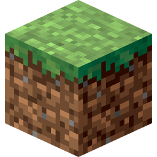

about

Do you have Minecraft? Come join our 1.17.1 survival server! Join at mc.bithole.dev, or check out the online map. See you there!
Hi, I'm Adrian. I am a guy who programs.
I've dabbled in all sorts of computer-related stuff, from web development to bare-metal tinkering. If I'm not coding, I'm probably talking to people about coding. (I'm not very good at either of those things.)
Outside of the digital realm, I also enjoy gardening, photography, and astronomy. You can check out some pictures I've taken on my Flickr.
This site's code is available on GitHub, check it out!
Need a server to host your app? Use my DigitalOcean referral link and get $100 of credit. It's basically free money! Who doesn't love free stuff?

profiles
- GitHub: @adrian154
- Flickr: @adrian.z
contact
My preferred method of contact is through Discord; my tag is drain#5012. If you would rather reach me through digital snailmail, you can also try my email at azhangcc@gmail.com, though be warned that I check it infrequently.
You can send me some bitcoins at bc1q3hpypqyhrft6a67dhlrt22cl6saw775kd2h298, though personally I am a bigger advocate for Nano. Please excuse the address reuse.
projects
Things that I find are actually worth mentioning.


Tiny Virtual Machine (TVM)
An artificial, emulated CPU, useful for teaching assembly programming and low-level concepts while avoiding the historical baggage of real architectures.

MCWebSocketPlugin
A simple framework for building websocket-based Minecraft integrations like Discord bots or web consoles.
MineLink
A Discord-Minecraft interlink system built on top of MCWebSocket. Currently used on my SMP.

node-mc-api
A NodeJS package providing functions for pinging Minecraft servers and interacting with Mojang's official API. Capable of authenticating users, updating skins, and looking up name histories.
miscellaneous
Less interesting tinkerings.
See how barycentric coordinates can be used to determine whether a point lands within a triangle.
Determine the tempo of anything by clicking your mouse to the beat.
Simulate different Life-like cellular automata in the browser.
Look at random screenshots taken through Lightshot, thanks to their horrible URL security.
Create beautiful math equations and share the link with friends.
It's Minesweeper. What more is there to say?
See why parabolic mirrors fail to focus off-axis rays from infinity.
See why spherical mirrors can never focus light to a point.
A simple tool to determine mirror sagitta from focal length and vice versa.
See how circles and trigonometric functions are related.
Dodge asteroids and try to stave off your inevitable death.
Play with semi-realistic water simulated using smoothed particle hydrodynamics.
Mess around with simulated springs.
Generate fake real calendar facts as per xkcd #1930.
It's a clock.
Now with 100% more explosions!
other links
Here are some other open source monkeys who have been awfully nice to me. Go check them out, too.
Did I miss you? Shoot me a DM.
© 2020 Adrian Zhang